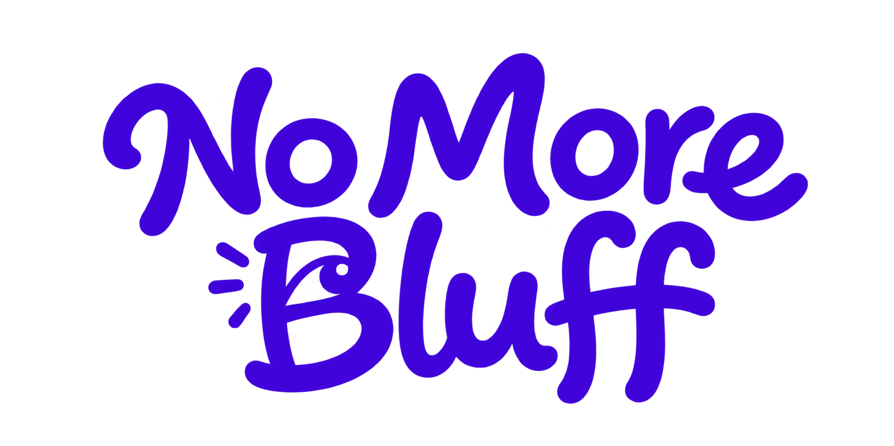

DEVELOPMENT BUILD · MONAD TESTNET
Claims need receipts.
On X, verified creators get badges, trade calls get a signal bar, and Trade ▸ opens the creator's record, a Nansen wallet check and a Kuru (spot) or Perpl (perp) review.
- Checking app…
The extension never receives wallet keys or signs transactions. Trades are reviewed and signed in the app. DEMO marks data shown because a provider key is not configured.